Izuki, in pictures.
Explore the Windows AI companion, its phone interface and the Izuki brand. Open any image to see it at full size. These screenshots show the app’s interface; its appearance can vary by version and your settings.
Posters

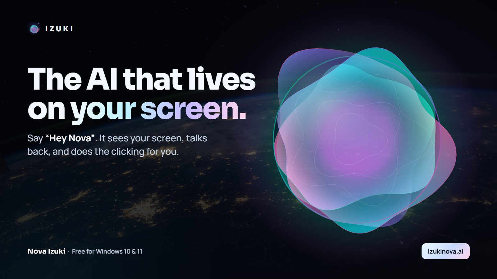
The AI that lives on your screen
the AI that lives on your screen. Say “Hey Nova” and it sees your screen, talks back and does the clicking. Free for Windows 10 and 11.
Open full-size image
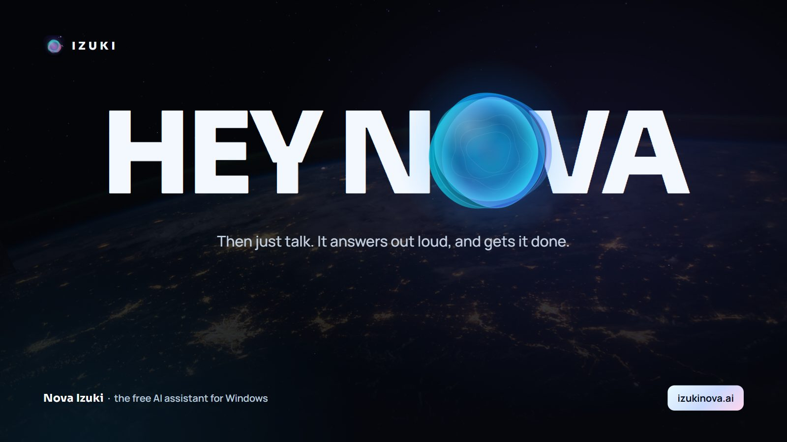
Say “Hey Nova”
HEY NOVA in large letters with Izuki's liquid orb as the O. Then just talk; it answers out loud and gets it done.
Open full-size image
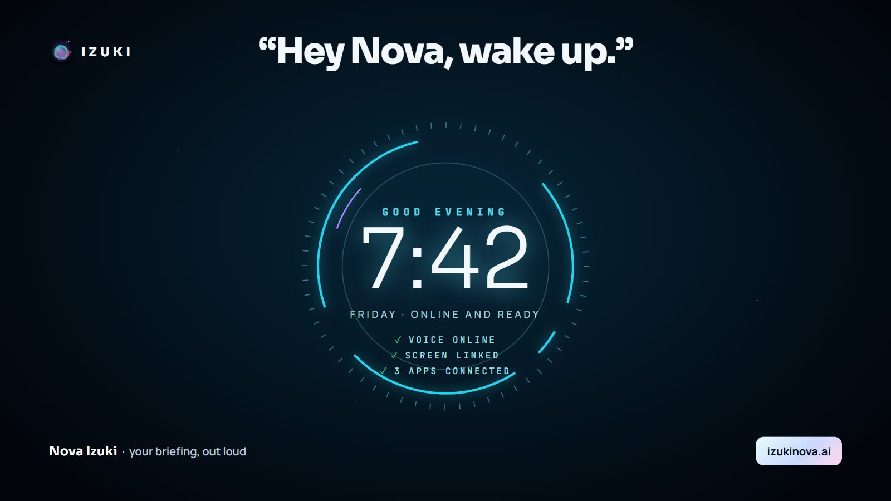
“Hey Nova, wake up.”
the wake-up status screen, a clock inside glowing rings with voice online, screen linked and apps connected.
Open full-size image
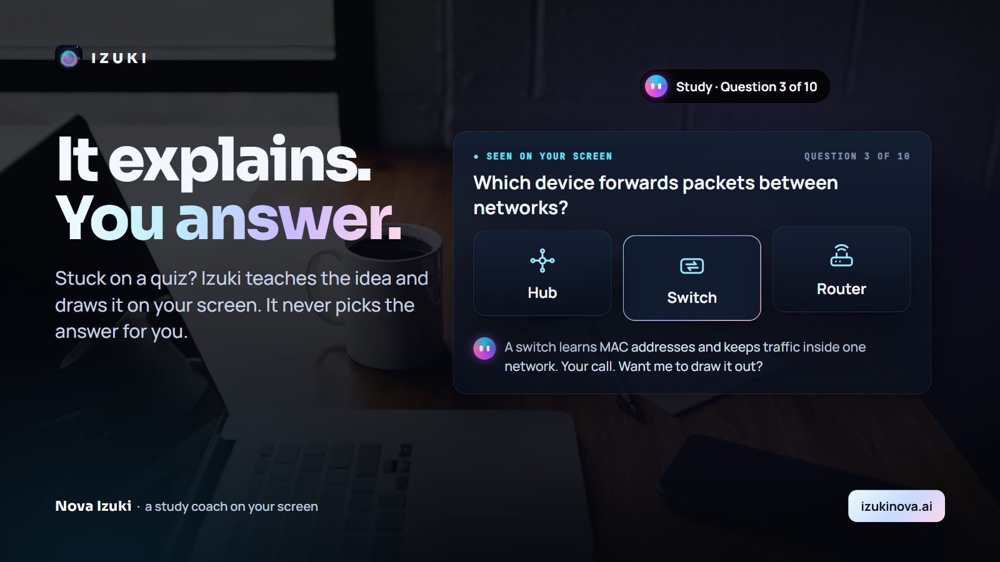
It explains. You answer.
a quiz question on screen with floating answers and Izuki coaching, never picking the answer for you.
Open full-size image
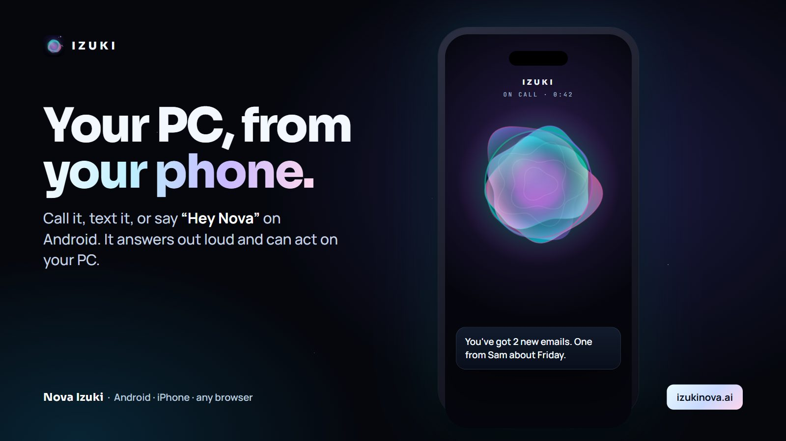
Your PC, from your phone
a phone on a call with Izuki's orb, saying you have two new emails. Works on Android, iPhone and any browser.
Open full-size image
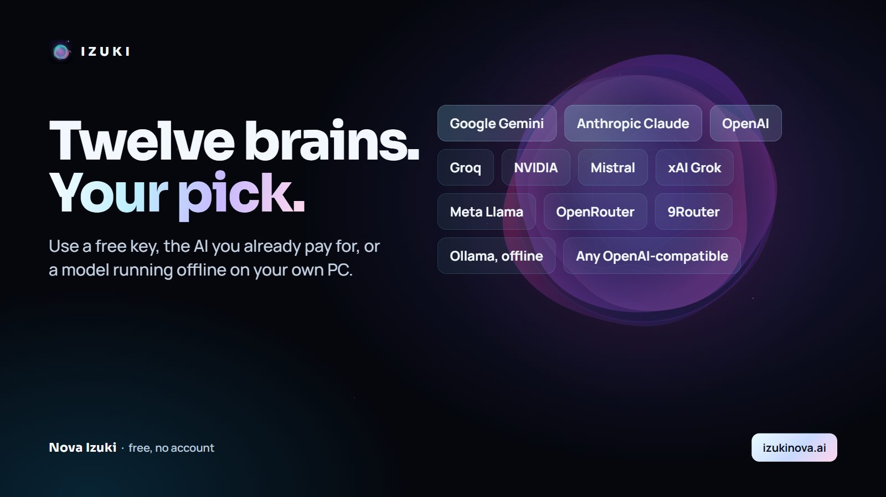
Twelve brains. Your pick.
twelve AI providers to choose from, including Google Gemini, Anthropic Claude, OpenAI, Groq, NVIDIA and Ollama offline.
Open full-size imageThe app

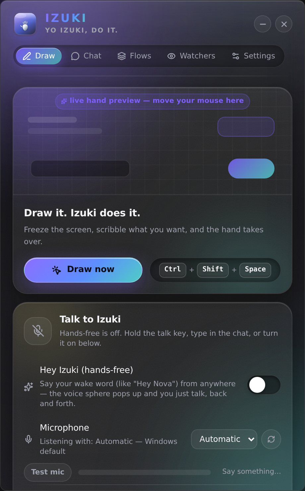
Draw on your screen
Izuki Draw panel on Windows, with controls for asking about something on your screen.
Open full-size image
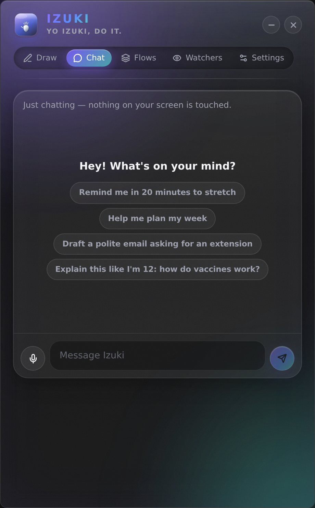
Chat with Izuki
Izuki Chat panel with a message box, microphone and conversation suggestions.
Open full-size image
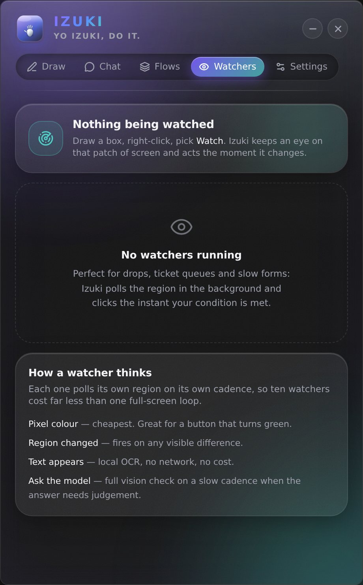
Screen watchers
Izuki Watchers panel for watching an area of your Windows screen.
Open full-size image
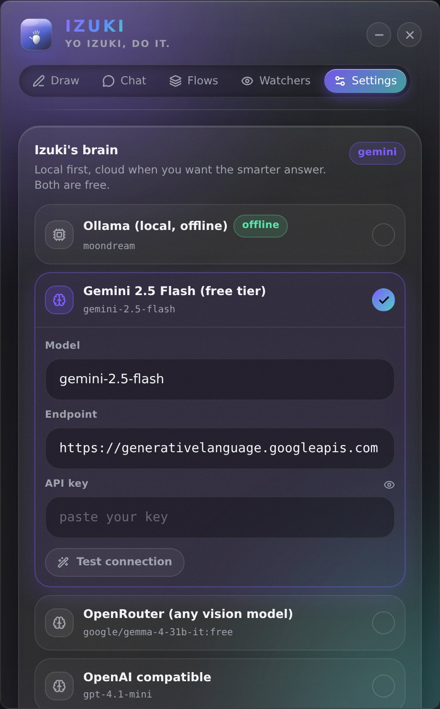
Make Izuki yours
Izuki Settings panel with AI provider, voice and assistant preferences.
Open full-size image
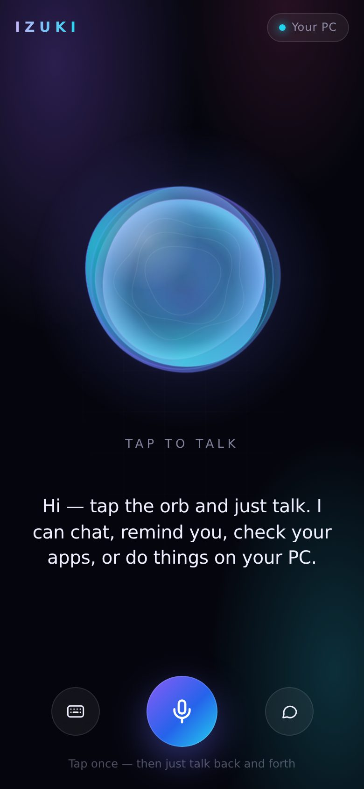
Izuki on your phone
Izuki phone call interface with its glowing orb and voice controls.
Open full-size image
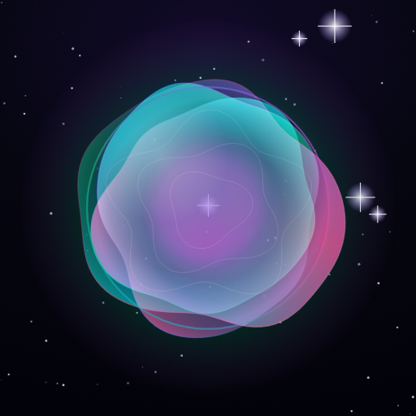
The Izuki brand icon
The Izuki orb logo in cyan, violet and pink against a dark background.
Open full-size image
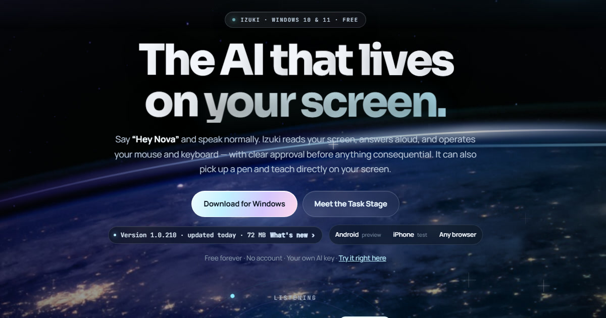
Izuki website artwork
Izuki’s official website artwork for the AI companion.
Open full-size image